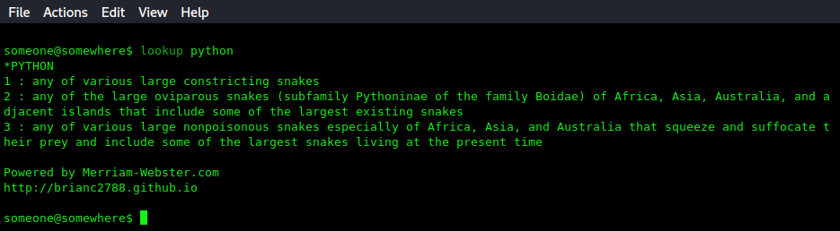

Python 3 - lookup
I get a ton of use out of this. When I first started learning about web scraping using BeautifulSoup4 (Python3), I immediately thought of scraping Google for the definitions of words. I had grown really accustomed to going to google and typing 'define' plus a word I wanted to look up. Long story short, I ended up scraping Merriam-Webster's website (This was also still a bit before I started getting into web API's). For me, this is how I started eating my own dogfood, for those who are familiar with the phrase. Clocking in at about 60 lines of python (around 0.06 KLOCS - Lol. I forgot who came up with that; AT&T? MS?), it's nothing special and there's plenty of room for improvement. Speaking of improvements, a graphical interface would be the most obvious thing to implement -- could be just the excuse I need to crack open a No Starch book I have for Python GUIs; that, or just use pygame. Anyways, because of how much it improves productivity for me, I think it would be more than worth it to implement best practices, docstrings, more robust exception handling and options, ...